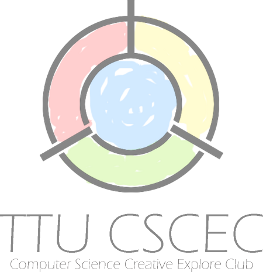
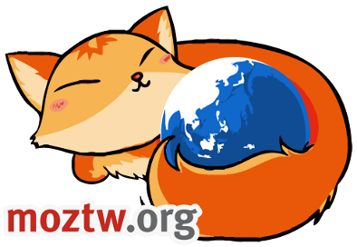
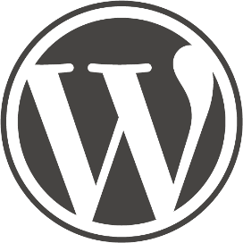

網際網路發展至今，已經從第一階段的上網閱讀網頁資訊，第二階段的使用網路服務，而開始邁向第三個階段：讓所有人都開始在網路上創作。就像每人都能提筆寫字一樣、人人都應該能夠在網路上留下自己的足跡。Mozilla 的 Webmaker 計畫即是以簡便的工具，讓人們學習撰寫簡單網頁的技能。
本次「夏日的Web樂園」由海洋大學網路發展協會 、MozTW 社群及美商謀智（Mozilla Taiwan），邀請各社群共同籌辦，以園遊會呈現各種參與網路的方式，帶領你在網路上留下足跡！只要你平常喜歡上網，想多了解網頁的原理，都歡迎加入！

社團宗旨為提升大同大學學生資訊素養，熟悉各種熱門軟體、網路服務、作業系統、程式語言、資訊安全......等，並邀請強大之業界專家擔任社團課程講師，及與相關單位合辦活動。
培訓人才參與各種國內、外的資訊相關競賽，本社團每半個學期定期舉辦校內程式設計競賽(TTUPC)以增進競爭能力，並且利用寒、暑假期間密集訓練，且協助社員考取相關證照。
海洋大學網路發展協會，簡稱 IND，是由海洋大學電算中心老師與一群熱心的學生組成的團體，如同其他學校的網路策進會一樣，主要目的為促進學校網路的發展，提供本校師生網路服務。
Mozilla Taiwan 美商謀智由 Mozilla 基金會所擁有，是一個全球化的非營利組織，其願景是打造一個開放自由的網路未來，提升人們的網路經驗，並支持開放源碼的資源共享精神。主要產品為 Firefox、Thunderbird，其中 Firefox 是全球市場前三大瀏覽器，在世界各地擁有廣大支持者。

MozTW 成立於 2004 年，負責維護 Mozilla 軟體與網站的中文在地化，並持續舉辦推廣活動及講座，努力傳播 Mozilla 開放網路、社群驅動的理念，且積極參與全球社群。我們是一群愛好網路的人，想要讓網路變得更好，不論你的專長是什麼，都歡迎加入一同前進！

「胖卡（Puncar）計畫」是亞洲首個即時紀錄且運用多樣 Web2.0 科技服務而推動的數位落差計畫。由台灣數位文化協會所主持，以全台數位偏鄉為計畫施行地點，並自2008年五月開始，購買一台小貨卡，搭配資訊裝備、講師及網路志工，有系統和次序地進行全台巡迴之旅，傳達資訊科技新知及應用現況。數位落差行動車預計直接面對最為困難的最後一哩問題。利用數位落差行動車，把人、連結和資源，送到有需要的偏遠地區。透過網路行銷之宣傳，期引起一般大眾對於數位落差議題的關注，進而影響整體大環境，加速落差消弭，同時間為城鄉資源的互動搭起連結的橋樑。

WordPress Taiwan 正體中文開始於 2008 年 11 月，這項計畫最早在 2008 年 05 月時被提出，網站主要專注於 WordPress 的推廣與建立相關資訊，包含 WordPress 正體中文語系維護、文件中文化與支援討論區服務。你可以自 WordPress Taiwan 網站下載並安裝一個名為 WordPress 的程式。你需要一個網站空間和最小的系統需求和一些些時間完成安裝。WordPress 是一個完整並讓你自訂性平台，你可以使用它做大部份的事情。此外，還有一項名為 WordPress.com 的服務，可以讓你在幾秒內建立一個以 WordPress 為基礎的免費部落格，但它可能在某些方面沒有你自行下載安裝 WordPress 來的靈活。

教育部致力於校園資訊應用多元發展的推動，以培養學生正確的資訊應用觀念以及善用資訊科技解決問題的能力，並希望透過自由軟體的推動，縮短數位落差，實現教育機會均等的理想，教育部除了支援各縣市自由軟體的推動，並成立「校園自由軟體應用諮詢中心」，執行校園自由軟體推動計畫。